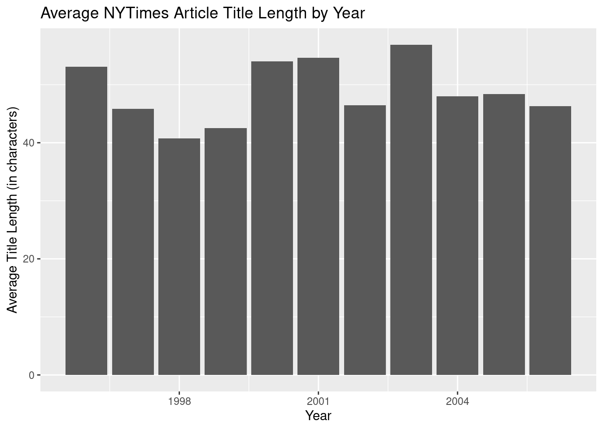

For this project, I used a data set containing containing string data to see if any interesting patterns could be identified by isolating text within the data set. The data set I used had headlines from The New York Times from 1996 to 2005, compiled by Professor Amber E. Boydstun at UC Davis. The data can be accessed through the RTextTools R package.
Show the code
#load R packages + datalibrary(RTextTools) library(tidyverse)source("R/theme_asuva.R")data(NYTimes)as_tibble(NYTimes)
# A tibble: 3,104 × 5
Article_ID Date Title Subject Topic.Code
<int> <fct> <fct> <fct> <int>
1 41246 1-Jan-96 Nation's Smaller Jails Struggle To C… Jails … 12
2 41257 2-Jan-96 FEDERAL IMPASSE SADDLING STATES WITH… Federa… 20
3 41268 3-Jan-96 Long, Costly Prelude Does Little To … Conten… 20
4 41279 4-Jan-96 Top Leader of the Bosnian Serbs Now … Bosnia… 19
5 41290 5-Jan-96 BATTLE OVER THE BUDGET: THE OVERVIEW… Battle… 1
6 41302 7-Jan-96 South African Democracy Stumbles on … politi… 19
7 41314 8-Jan-96 Among Economists, Little Fear on Def… econom… 1
8 41333 10-Jan-96 BATTLE OVER THE BUDGET: THE OVERVIEW… budget… 1
9 41344 11-Jan-96 High Court Is Cool To Census Change census… 20
10 41355 12-Jan-96 TURMOIL AT BARNEYS: THE DIFFICULTIES… barney… 15
# ℹ 3,094 more rows
Since the time period in this data set coincides with the surge in popularity of the World Wide Web, I wondered if major news outlets began placing their articles online during these years. For my first question, I wanted to investigate whether or not the average length of New York Times article titles changed over time to fit the new medium.
In order to do this analysis, I used str_length to obtain the number of characters in each article title.
Show the code
library(lubridate)#create df for average length of nyt article titles AvgTitleLength <- NYTimes |>mutate(TitleLength =str_length(Title), Year =year(dmy(Date))) |>group_by(Year) |>summarize(AvgTitleLength =mean(TitleLength)) |>select(Year, AvgTitleLength)as_tibble(AvgTitleLength)
#loading ggplot and my custom themelibrary(ggplot2)#create bar chart of avg NYT article title length ggplot(AvgTitleLength, aes(x = Year, y = AvgTitleLength)) +geom_col(fill ="rosybrown3") +labs(title ="Average NYTimes Article Title Length by Year",x ="Year",y ="Average Title Length (in characters)") +theme_asuva()

From the graph above, it is clear that there is not much of a trend in the average title length over time. From 1996 to 2005, the average length of NYTimes article titles have been between 40 to 57 characters. The average length tends to fluctuate by each year, but there aren’t enough years in the data set to identify a concrete downward trend in the length of the titles.
Taking the limited sample size for year into account, I wanted to search for something more specific—a trend that was more likely to show up on a graph. Since the years included on the data set were from the range 1996-2005, I was interested in the number of times “Iraq” was mentioned in a headline, considering that the Iraq War began in 2003. I predict that there would be a sharp upturn in the number of times Iraq was mentioned after 2001, with 2003 being the year when it was mentioned the most.
In order to do this analysis, I used str_detect along with the regular expression (?i) to account for capitalized vs. non-capitalized headlines in the data set.
Show the code
#create tibble of number of times Iraq appeared in headline titleIraqHeadlines <- NYTimes |>mutate(Year =year(dmy(Date))) |>group_by(Year) |>summarize(IraqinTitle =sum(str_detect(Title, "(?i)Iraq"))) |>select(Year, IraqinTitle)as_tibble(IraqHeadlines)
#graph previous tibbleggplot(IraqHeadlines, aes(x = Year, y = IraqinTitle)) +geom_point() +geom_smooth(se =FALSE, color ="rosybrown3") +labs(title ="Number of Times \"Iraq\" Appeared in Headline by Year",x ="Year",y ="Number of Times \"Iraq\" Appeared in Headline") +theme_asuva()
According to the graph, there is a distinct increase in the number of times “Iraq” appears within the plot after 2001. In accordance with my prediction, the year with the greatest number of times Iraq appeared in the headline of a NYTimes article was 2003.
Since the previous plot yielded expected results, I wondered how else I could utilize key words within the data set. While parsing through some of the headlines in the original NYTimes dataset, I noticed that certain titles would begin with a key word/phrase and a colon. For example, take this title from the dataset, “CRASH IN THE BALKANS: THE RESCUE; A Storm-Swept Mountain’s Grim Story.” The phrase “CRASH IN THE BALKANS” serves as a signifier to introduce the main subject matter of the story. I wanted to see how many of these key words or phrases existed within the data set.
To do this analysis, I used str_detect to filter for rows with colons and str_extract with a lookahead to extract everything up to the colon.
Show the code
#create df to extract key words in title KeyPhrasesinTitle <- NYTimes |>filter(str_detect(Title, ":")) |>mutate(KeyPhrase =str_extract(Title, ".+(?=:)")) |>filter(!is.na(KeyPhrase)) |>group_by(KeyPhrase) |>summarize(KeyPhraseTotal =n()) |>select(KeyPhrase, KeyPhraseTotal) |>arrange(desc(KeyPhraseTotal))as_tibble(KeyPhrasesinTitle)
# A tibble: 265 × 2
KeyPhrase KeyPhraseTotal
<chr> <int>
1 A Nation Challenged 45
2 THE 2000 CAMPAIGN 32
3 POLITICS 21
4 THREATS AND RESPONSES 20
5 A NATION AT WAR 17
6 CRISIS IN THE BALKANS 15
7 TESTING OF A PRESIDENT 15
8 AFTER THE WAR 9
9 AFTEREFFECTS 8
10 THE STRUGGLE FOR IRAQ 7
# ℹ 255 more rows
According to the dataset, there are 265 key phrases that exist within the titles of the articles. The most common is “A Nation Challenged” with 45 instances of it in the dataset. This is followed by “THE 2000 CAMPAIGN”, which had 32 instances of it occurring.
While examining the new table, I wondered if I could filter the data even more so I could find key words in the title (as opposed to phrases). For example “POLITICS” is one of the most common introductory words in the titles of articles, with 21 instances of it occurring.
In order to do this analysis, I slightly altered the code above to account for only words as opposed to words and phrases. To do this, I used the regular expressions of “^” and “\w” to filter for rows that started with a word followed directly by a colon.
Show the code
#filter data to find key introductory words in the title KeyWordsinTitle <- NYTimes |>filter(str_detect(Title, "^\\w+:")) |>mutate(KeyWord =str_extract(Title, "^\\w+(?=:)")) |>filter(!is.na(KeyWord)) |>group_by(KeyWord) |>summarize(KeyWordTotal =n()) |>select(KeyWord, KeyWordTotal) |>arrange(desc(KeyWordTotal))as_tibble(KeyWordsinTitle)
After doing that, I was able to view the key introductory words that were used in the titles of the headlines, which fit neatly into this 8 row table. Unsurprisingly, the most popular key word was “POLITICS”, which was easily predictable simply by examining the previous table.